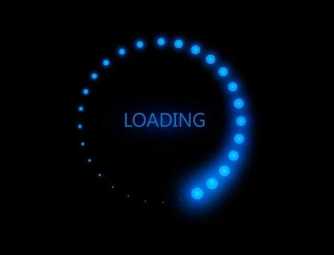
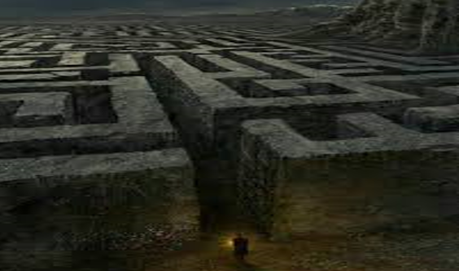
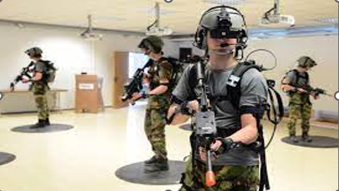
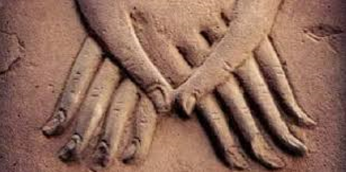
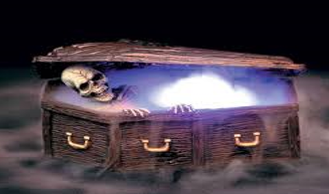

Welcome to the pharaonic tarot game Cultural recreational tourism game

A cultural entertainment resort consisting of four levels
Location : Hurghada
💪🏼🔥😎 Project organizers : GANG
The game consists of four levels in the form of a maze
Level 1 The Maze

It consists of 6 rooms divided into :
- Three rooms to display tourist and historical information about the chosen character.
- And three rooms contain three cards distributed among the rooms (1-2-6) with three gases to get those cards.
- A room with a barcode that is searched for by the player and the barcode is photographed to show the password to open the safe that contains the card
- A room with a substance that conceals what is on the walls, and using a laser, the password is collected to open the safe in which the card is located .
The third room is empty and designed in the form of pharaonic stones in the same shape .
One of those stones contains the card .. And then exit and enter the second level by walking inside a maze until reaching the door of the second level
and upon reaching the second level, the astrologer appears to take the three cards that were collected during the first level and give them the chosen character card, after which the chosen character appears to give introductions to the war that He will fight it and ask for help in achieving victory.
Second Level Legends War

During the second level
video games are played , and after completion and victory , the mine appears again to give them the lovers’ card
and then they walk in another maze until the player reaches the door of the third level.
Third Level Love Room

In the third level :
the love story experienced by the chosen character is told , after listening to this story the astrologer appears for the last time to give the player the mysterious character cardbr
then he completes the maze to reach the fourth and final level.
Fourth Level Magic Tomb

The chosen character appears by getting out of the coffin using the hologram technique .